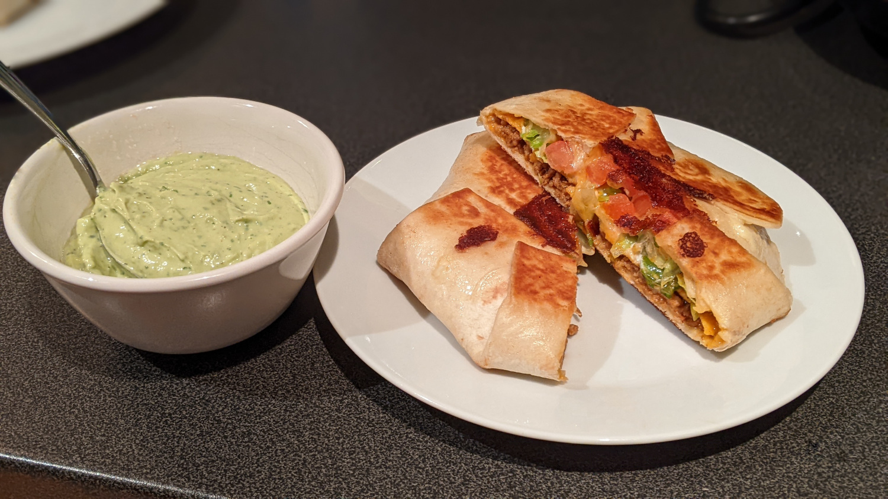

Crunchwrap Supreme

Author: Derek Nichols |
Cooked: February 5, 2022 |
Yields: 6 Servings | Prep Time: 15 Minutes | Cook Time: 15 Minutes
Ingredients
- 1 lb ground turkey
- 1 Tbs olive oil
- 2 tsp minced garlic
- 2 tsp chili powder
- 1 tsp coriander
- 1 tsp salt
- 1 tsp paprika
- 1 tsp cumin
- 1 tsp oregano
- 1/2 tsp black pepper
- 1/4 tsp onion powder
- 2 Tbs tomato sauce
- 1 Tbs cilantro --------------------------
- Shredded lettuce
- Chopped tomatos
- Large flour tortilla (burrito size)
- Tostadas
- Sour cream
- Nacho cheese
- Shredded Mexican cheese blend
- Mayonnaise (for toasting) --------------------------
- 2 large avocados
- 1/2 cup mayonnaise
- 1/4 cup milk
- 1/4 cup cilantro
- 2 Tbs lime juice
- 2 Tbs diced jalapeños
- 2 tsp minced garlic
- 1 tsp black pepper
- 1/4-1/2 tsp salt
- Dash of cayenne powder
- 1/4 cup jalapeño vinegar
Taco Meat
Crunchwrap Filling
Avocado Ranch
Directions
- In a pan over medium heat, add oil and garlic and cook until golden being careful not to burn.
- Add ground turkey along with all of the taco spices. Break up meat as it cooks.
- Once the meat is fully cooked, add tomato sauce and cilantro. Mix and take off heat. --------------------------
Taco Meat
- Spread nacho cheese in the center of a flour tortialla and add groung turkey on top.
- Spread sour cream on top of tostada and place on top of meat (sour cream facing up).
- Add lettuce, tomato, and shredded cheese.
- Begin to fold in the sides of the crunchwrap making sure to hold the tostada in place as you work around the first half. I try to seal it in six folds.
- Brush the folded side of the crunchwrap with mayonnaise and place folded side down on a pan over medium heat. Spread a light amount of mayonnaise over the other side, and toast both sides to a golden brown. --------------------------
Assembly
- Throw all ingredients into a food processor or blender and blend until smooth. Adjust any ingredient quantities to taste.
Avocado Ranch
Additional Notes
- Could save a lot of hastle by using premixed taco seasoning, but I felt like this gave it a better flavor.
- I usually hate cilantro (I'm in the boat that thinks it tastes like soap), so I was initially worried about all of the cilantro in the avocado ranch, but I didn't notice it at all! I think that all of the acid from the lime juice and jalapeño vinegar neutralized it.